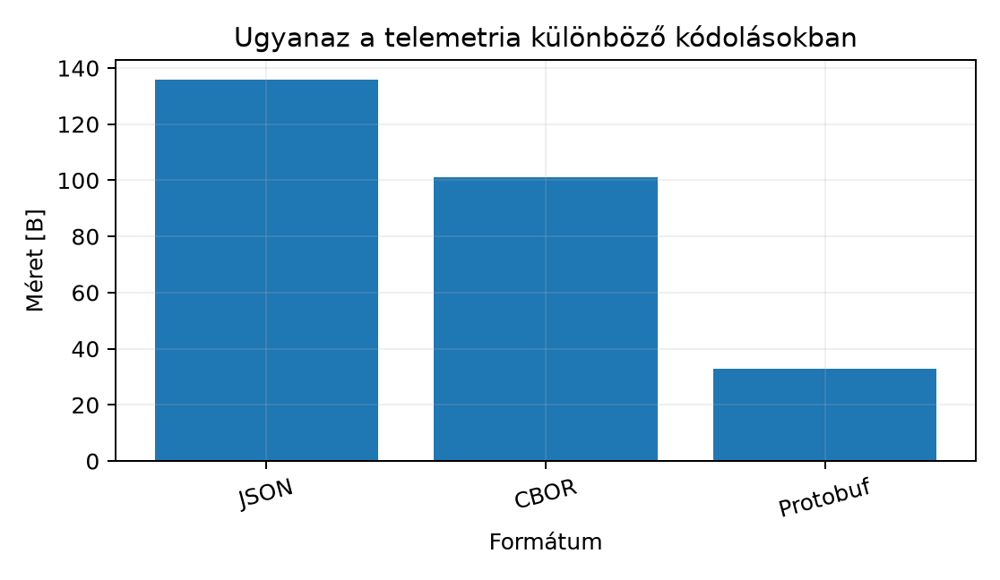

A TerraSense csomópontja a mérést bináris struktúrában,
ts_sample-ként állítja elő, a gateway pedig MQTT-n
továbbítja a backendnek. A topic-konvenció már rögzíti, hogy a
telemetria a terrasense/<site>/<node>/telemetry
topicra kerül, de az üzenet törzsének formátumáról még nem döntöttünk. A
választás hosszú távon meghatározza a sávszélességet, a feldolgozási
költséget, az eszközoldali memóriaigényt és a séma evolúcióját. Egy
LoRaWAN-os csomópontnál minden bájt fizetős, míg a backend
fejlesztésekor a JSON gyors hibakeresést tesz lehetővé. Ebben az
alfejezetben összevetjük a négy legfontosabb formátumot, és
véglegesítjük a TerraSense telemetria-sémáját.
Definíció. A JSON (JavaScript Object Notation) szöveges adatcsere-formátum, amely objektumokat kulcs–érték párokkal, tömböket és skalárokat (szám, string, logikai, null) ábrázol. Az RFC 8259 rögzíti, hogy a számok a JavaScripthez hasonlóan IEEE 754 double pontosságú lebegőpontos értékként kezelendők, hacsak a fogyasztó másképp nem állapodik meg.
A JSON előnye, hogy minden platformon azonnal olvasható és könnyen
logolható. A hátránya a méret és a számábrázolás: nincs külön egész és
lebegőpontos típus, a 0,1 nem pontosan reprezentálható, és a 2⁵³-nél
nagyobb egészek elveszíthetik a pontosságot. Az epoch ms időbélyegünk
nagyságrendű, tehát még belefér a double egész pontosságú tartományába,
de a mérési értékeknél a 22.5 mögött a fogyasztó
22.499999-et is láthat.
Definíció. A CBOR (Concise Binary Object Representation) az RFC 8949-ben definiált bináris formátum, amely a JSON adatmodellt bővíti ki: bájtstring, nem szöveges map-kulcsok, címkék (tag) és lebegőpontos félpontosság is elérhető.
A CBOR ugyanazt a szemantikát kódolja, de kompakt bájtokba. Például
egy rövid szöveget egy hossz- és típusbájttal, egy uint64-et pedig
legfeljebb 9 bájttal ábrázol. A Zephyrben a zcbor könyvtár
elérhető CBOR kódoláshoz és dekódoláshoz, de a konkrét Kconfig-nevét és
API-ját a telepített Zephyr-változatban ellenőrizni kell.
Definíció. A Protocol Buffers (protobuf) a Google
által fejlesztett, sémaalapú bináris formátum. A .proto
fájlban mezőszámokkal és típusokkal írjuk le az üzenetet, a
protoc generátor pedig célnyelvi osztályokat és sorosító
kódot készít.
A protobuf wire-formátuma a mezőket nem névvel, hanem mezőszámmal
azonosítja. A mezőazonosító egy bájtba sűríti a mezőszámot és a wire
típust: tag = (field_number << 3) | wire_type. A
varint egész kódolás a kis számokat 1 bájtba kódolja, a lebegőpontos
float 4 bájt, a string és a beágyazott üzenet
hosszprefixes. Mikrokontrollerekre a nanopb implementáció
használható, amely Zephyrben modulként érhető el; a pontos verzió és az
integráció ellenőrzést igényel.
Definíció. A SenML (Sensor Measurement Lists) az RFC
8428-ban definiált formátum, amely mérési rekordok listáját írja le.
Minden rekordnak van neve (n), egysége (u),
értéke (v) és időbélyege (t), valamint
opcionális bázismezei (bn, bt,
bu).
A SenML előnye, hogy az egységek egy szabványos regisztrációból
származnak, például Cel, %RH, %.
Ezért a TerraSense akkor is értelmezhető marad, ha a mérést nem a saját
backendünk, hanem egy másik fél fogadja. A SenML kódolható JSON-ban,
CBOR-ban vagy EXI-ben is.
A négy formátum közötti választást a következő táblázat foglalja össze.
| Szempont | JSON | CBOR | Protobuf | SenML |
|---|---|---|---|---|
| Méret | nagy | közepes | kicsi | közepes |
| Olvashatóság | igen | nem | nem | igen |
| Séma | nincs, de JSON Schema | nincs, de CDDL | van, .proto |
van, RFC 8428 |
| Feldolgozási költség | közepes | alacsony | nagyon alacsony | közepes |
| Eszközök | mindenhol | Zephyr zcbor |
nanopb |
kevés |
| Interoperabilitás | jó | jó | csak protobuf-fal | kiváló |
A TerraSense döntése: a telemetria elsődlegesen JSON
lesz a gateway és a backend közötti MQTT-üzenetekben, mert ezen a
szakaszon a sávszélesség nem szűkös, a Java/Spring Boot és a C++ gateway
is jól kezeli, és a hibakeresés során olvasható marad. A
.proto sémát is definiáljuk, mert később bináris
optimalizáláshoz és a nanopb-s eszközoldalhoz szükséges. A SenML-t az
egységek és a mérési rekordok interoperábilis leírására használjuk.
Legyen a TerraSense mérés: schema_version=1,
node_id="n001", seq=1,
ts=1735689600000 (UTC, epoch ms), és egy hőmérséklet-mérés
22,5 °C. Ugyanaz az üzenet JSON-ban, olvashatóság kedvéért
tagolva:
{
"schema_version": 1,
"node_id": "n001",
"seq": 1,
"ts": 1735689600000,
"measurements": {
"temperature": {"value": 22.5, "unit": "Cel", "valid": true}
}
}A script a fenti objektumot separators=(",", ":")
beállítással tömöríti, így a JSON kódolás hossza 136 bájt. A CBOR
ugyanezt 101 bájtba kódolja, a protobuf pedig 33 bájtba. A CBOR bájtok
teljes hex dumpja (a sorok csak a nyomtatás miatt tördeltek):
a56e736368656d615f76657273696f6e01676e6f64655f6964646e3030316373
6571016274731b000001941f297c006c6d6561737572656d656e7473a16b7465
6d7065726174757265a36576616c7565fa41b4000064756e69746343656c6576
616c6964f5A protobuf kanonikus sémája a következő. A mezőszámok a fejezet teljes hosszában rögzítettek: a későbbi verziók csak új mezőszámot adhatnak hozzá, a meglévőket nem számozzák át.
syntax = "proto3";
package terrasense;
message Telemetry {
uint32 schema_version = 1;
string node_id = 2;
uint64 seq = 3;
int64 ts = 4;
Measurements measurements = 5;
}
message Measurements {
Measurement temperature = 1;
Measurement humidity = 2;
Measurement soil_moisture = 3;
}
message Measurement {
float value = 1;
string unit = 2;
bool valid = 3;
string reason = 4;
}A példaüzenet protobuf kódolásában a schema_version 2
bájt, a node_id 6 bájt (tag + length + adat), a
seq 2 bájt, a ts 7 bájt, a beágyazott
measurements pedig 16 bájt, összesen 33 bájt. A v1 séma öt
felső szintű mezőt definiál; a későbbi verziók új mezőszámot toldanak
hozzá, a meglévőket nem számozzák át.

A méretkülönbség jól mutatja, hogy a bináris formátumok ott előnyösek, ahol a bájtok száma energia- vagy költségkorlátot jelent.
Munkakönyvtár:
mkdir -p ~/iot-labor/i032 && cd ~/iot-labor/i032Hozd létre a telemetry_codec.py fájlt az alábbi
tartalommal. A script ugyanazt a mérést kódolja JSON-ban, CBOR-ban és
protobufban, és kiírja a méreteket.
#!/usr/bin/env python3
import json
import struct
MAX_UINT64 = (1 << 64) - 1
def require_uint(value, maximum=MAX_UINT64):
if not isinstance(value, int) or isinstance(value, bool):
raise TypeError(f"egész érték kell: {value!r}")
if not 0 <= value <= maximum:
raise ValueError(f"tartományon kívüli egész: {value}")
def cbor_head(major, length):
if not 0 <= length <= MAX_UINT64:
raise ValueError(f"CBOR hossz túl nagy: {length}")
if length < 24:
return bytes([(major << 5) | length])
if length <= 0xFF:
return bytes([(major << 5) | 24]) + length.to_bytes(1, "big")
if length <= 0xFFFF:
return bytes([(major << 5) | 25]) + length.to_bytes(2, "big")
if length <= 0xFFFFFFFF:
return bytes([(major << 5) | 26]) + length.to_bytes(4, "big")
return bytes([(major << 5) | 27]) + length.to_bytes(8, "big")
def cbor_encode(value):
if isinstance(value, bool):
return b"\xf5" if value else b"\xf4"
if value is None:
return b"\xf6"
if isinstance(value, int):
if value < 0:
raise ValueError("negatív egész nem kódolható uintként")
return cbor_head(0, value)
if isinstance(value, float):
return b"\xfa" + struct.pack(">f", value)
if isinstance(value, str):
data = value.encode("utf-8")
return cbor_head(3, len(data)) + data
if isinstance(value, dict):
out = bytearray(cbor_head(5, len(value)))
for key, item in value.items():
if not isinstance(key, str):
raise TypeError("a CBOR map kulcsa csak string lehet")
out.extend(cbor_encode(key))
out.extend(cbor_encode(item))
return bytes(out)
if isinstance(value, (list, tuple)):
out = bytearray(cbor_head(4, len(value)))
for item in value:
out.extend(cbor_encode(item))
return bytes(out)
raise TypeError(f"nem támogatott CBOR típus: {type(value).__name__}")
class CborReader:
def __init__(self, data):
self.data = data
self.pos = 0
def take(self, count):
if self.pos + count > len(self.data):
raise ValueError("csonka CBOR")
chunk = self.data[self.pos:self.pos + count]
self.pos += count
return chunk
def decode(self):
first = self.take(1)[0]
major = first >> 5
info = first & 0x1F
if major == 7:
if info == 20:
return False
if info == 21:
return True
if info == 22:
return None
if info == 26:
return struct.unpack(">f", self.take(4))[0]
raise ValueError(f"nem támogatott egyszerű érték: {info}")
if info < 24:
arg = info
elif info == 24:
arg = int.from_bytes(self.take(1), "big")
elif info == 25:
arg = int.from_bytes(self.take(2), "big")
elif info == 26:
arg = int.from_bytes(self.take(4), "big")
elif info == 27:
arg = int.from_bytes(self.take(8), "big")
else:
raise ValueError(f"fenntartott CBOR additional info: {info}")
if major == 0:
return arg
if major == 3:
return self.take(arg).decode("utf-8")
if major == 4:
return [self.decode() for _ in range(arg)]
if major == 5:
result = {}
for _ in range(arg):
key = self.decode()
if not isinstance(key, str):
raise TypeError("a CBOR map kulcsa csak string lehet")
if key in result:
raise ValueError(f"duplikált CBOR kulcs: {key}")
result[key] = self.decode()
return result
raise ValueError(f"nem támogatott CBOR major type: {major}")
def cbor_decode(data):
reader = CborReader(data)
value = reader.decode()
if reader.pos != len(data):
raise ValueError("a CBOR után feldolgozatlan bájt maradt")
return value
def encode_varint(value):
require_uint(value)
out = bytearray()
while value > 0x7F:
out.append((value & 0x7F) | 0x80)
value >>= 7
out.append(value)
return bytes(out)
def pb_key(field_number, wire_type):
require_uint(field_number, 0x1FFFFFFF)
if field_number < 1 or 19000 <= field_number <= 19999:
raise ValueError(f"fenntartott protobuf mezőszám: {field_number}")
return encode_varint((field_number << 3) | wire_type)
def pb_varint(field_number, value):
return pb_key(field_number, 0) + encode_varint(value)
def pb_bytes(field_number, data):
return pb_key(field_number, 2) + encode_varint(len(data)) + data
def pb_text(field_number, text):
return pb_bytes(field_number, text.encode("utf-8"))
def pb_float(field_number, value):
return pb_key(field_number, 5) + struct.pack("<f", value)
def proto_encode_measurement(measurement):
out = bytearray()
out.extend(pb_float(1, measurement["value"]))
out.extend(pb_text(2, measurement["unit"]))
out.extend(pb_varint(3, 1 if measurement["valid"] else 0))
reason = measurement.get("reason")
if reason is not None:
out.extend(pb_text(4, reason))
return bytes(out)
def proto_encode_telemetry(message):
measurements = bytearray()
names = ("temperature", "humidity", "soil_moisture")
for index, name in enumerate(names, 1):
if name in message["measurements"]:
encoded = proto_encode_measurement(message["measurements"][name])
measurements.extend(pb_bytes(index, encoded))
out = bytearray()
out.extend(pb_varint(1, message["schema_version"]))
out.extend(pb_text(2, message["node_id"]))
out.extend(pb_varint(3, message["seq"]))
out.extend(pb_varint(4, message["ts"]))
out.extend(pb_bytes(5, bytes(measurements)))
return bytes(out)
def hex_lines(data, width=64):
digits = data.hex()
return [digits[i:i + width] for i in range(0, len(digits), width)]
def check_cbor_roundtrip(message, label):
encoded = cbor_encode(message)
decoded = cbor_decode(encoded)
if decoded != message:
raise AssertionError(f"CBOR round-trip eltérés: {label}")
print(f"CBOR round-trip OK: {label} ({len(encoded)} B)")
def main():
msg = {
"schema_version": 1,
"node_id": "n001",
"seq": 1,
"ts": 1735689600000,
"measurements": {
"temperature": {"value": 22.5, "unit": "Cel", "valid": True}
},
}
json_bytes = json.dumps(msg, separators=(",", ":")).encode("utf-8")
cbor_bytes = cbor_encode(msg)
proto_bytes = proto_encode_telemetry(msg)
print(f"JSON {len(json_bytes):3d} B")
print(f"CBOR {len(cbor_bytes):3d} B")
print(f"Protobuf {len(proto_bytes):3d} B")
print("CBOR hex:")
for line in hex_lines(cbor_bytes):
print(f" {line}")
print("Protobuf hex:")
for line in hex_lines(proto_bytes):
print(f" {line}")
for seq in (0, 23, 24, 255, 256, 65535, 65536):
check_cbor_roundtrip(dict(msg, seq=seq), f"seq={seq}")
long_id = "n001-eszak-uveghaz-01-hosszu-azonosito"
check_cbor_roundtrip(dict(msg, node_id=long_id), "hosszú node_id")
for bad in (-1, 1 << 64):
try:
cbor_encode(dict(msg, seq=bad))
except (ValueError, TypeError) as exc:
print(f"CBOR elutasítva: seq={bad} ({exc})")
else:
raise AssertionError(f"a hibás seq átment: {bad}")
if __name__ == "__main__":
main()Futtasd a scriptet:
python3 telemetry_codec.pyVárt kimenet:
JSON 136 B
CBOR 101 B
Protobuf 33 B
CBOR hex:
a56e736368656d615f76657273696f6e01676e6f64655f6964646e3030316373
6571016274731b000001941f297c006c6d6561737572656d656e7473a16b7465
6d7065726174757265a36576616c7565fa41b4000064756e69746343656c6576
616c6964f5
Protobuf hex:
080112046e30303118012080f8a5f9c1322a0e0a0c0d0000b441120343656c18
01
CBOR round-trip OK: seq=0 (101 B)
CBOR round-trip OK: seq=23 (101 B)
CBOR round-trip OK: seq=24 (102 B)
CBOR round-trip OK: seq=255 (102 B)
CBOR round-trip OK: seq=256 (103 B)
CBOR round-trip OK: seq=65535 (103 B)
CBOR round-trip OK: seq=65536 (105 B)
CBOR round-trip OK: hosszú node_id (136 B)
CBOR elutasítva: seq=-1 (negatív egész nem kódolható uintként)
CBOR elutasítva: seq=18446744073709551616 (CBOR hossz túl nagy: 18446744073709551616)A program a mintát és a határeseteket is ellenőrzi: a
seq 0, 23, 24, 255, 256, 65 535 és 65 536 értékére,
valamint egy 23 bájtnál hosszabb node_id-ra a CBOR
round-tripnek egyeznie kell. A negatív és a 64 bites tartományon kívüli
egész kódolása kivételt ad, nem csendben csonkol.
Hozd létre a végleges telemetria-sémát is. A
telemetry-schema.json egy JSON Schema (2020-12), amely a
kanonikus v1 üzenet kötelező mezőit és a mérési objektum szerkezetét
rögzíti:
{
"$schema": "https://json-schema.org/draft/2020-12/schema",
"$id": "https://terrasense.example/schemas/telemetry-v1.json",
"title": "TerraSense telemetry v1",
"type": "object",
"required": ["schema_version", "node_id", "seq", "ts", "measurements"],
"properties": {
"schema_version": {"const": 1},
"node_id": {"type": "string", "minLength": 1, "maxLength": 64},
"seq": {"type": "integer", "minimum": 0},
"ts": {"type": "integer", "minimum": 0},
"boot_id": {"type": "string", "minLength": 1},
"measurements": {
"type": "object",
"minProperties": 1,
"additionalProperties": {"$ref": "#/$defs/measurement"}
}
},
"additionalProperties": true,
"$defs": {
"measurement": {
"type": "object",
"required": ["value", "unit", "valid"],
"properties": {
"value": {"type": "number"},
"unit": {"type": "string", "minLength": 1},
"valid": {"type": "boolean"},
"reason": {"type": ["string", "null"]}
},
"additionalProperties": true
}
}
}A telemetry.proto fájl tartalma a fenti kanonikus
protobuf definíció, változtatás nélkül. A JSON Schema és a protobuf
ugyanazokat a mezőneveket használja; a protobufban a mezőszámok rögzítik
az azonosítást. A JSON Schema additionalProperties: true
beállítása szándékos: a v1 feldolgozó a jövőbeli verziók ismeretlen
mezőit figyelmen kívül hagyja, és naplózza őket.
A korábbi, lapos JSON-formátum (temperature_c,
humidity_rh, soil_moisture_pct) nem része a
kanonikus v1 sémának. Az ilyen üzeneteket a backend a 0-es verziójú,
dokumentált adapterrel fogadja el, és a lapos mezőket
measurements objektummá alakítja; erről a Sémák és verziózás: kompatibilis változtatások és
az Ingest: MQTT-ből a backendbe, idempotensen
alfejezet részletesen szól.
Továbbvitt eredmény. A
~/iot-labor/i032/telemetry-schema.json fájlban rögzített
JSON Schema a TerraSense hivatalos telemetria-formátumának v1
definíciója: schema_version, node_id,
seq, ts és measurements mezőkkel,
SenML-egységrövidítésekkel (Cel, %RH,
%) és valid/reason érvényességi
jelöléssel. A ~/iot-labor/i032/telemetry.proto ugyanennek a
bináris változata. Ezt a sémát használja a Sémák és
verziózás: kompatibilis változtatások, a A ts-gw
szolgáltatás C++-ban: protokollfordítás MQTT-re, az Ingest: MQTT-ből a backendbe, idempotensen és az Idősoros adatbázisok és adatmodellezés
alfejezet.
A labor kimenetét a hex dump alapján ellenőrizhetjük. A CBOR első
bájtja a5, ami egy 5 elemből álló map-et jelent; a protobuf
első bájtja 08, ami az 1-es mező
(schema_version) varint típusú tagje. A protobuf
wire-formátum nem garantálja a mezők sorrendjét, ezért a feldolgozó a
tagből olvassa ki a mezőszámot, nem a bájtpozícióból. A méreteket a
len() függvény pontosan adja meg.
| Tünet | Ok | Javítás |
|---|---|---|
A JSON-ben a 22.5 után 22.499999 jelenik
meg |
A fogyasztó double ábrázolása |
Kerekíts a megjelenítésnél, vagy küldj fixpontos egész értéket |
| A protobuf kódolt bájt hossza nagyobb a vártnál | A mezőszám nagyobb, mint 15, vagy a string hossza nagyobb, mint 127 | Használj kis mezőszámokat a gyakori mezőkhöz, és ellenőrizd a varint hosszakat |
A CBOR dekódoló major type 7 hibát ad |
A ts uint64 kódolásnál rossz a kiegészítő bájt |
Ellenőrizd a 0x1B utáni 8 bájt big-endian
sorrendjét |
A SenML-ben a v mező ütközik a verzióval |
A SenML a v-t a mért értéknek tartja fenn |
A TerraSense JSON-ban schema_version mezőt használj, ne
v-t |
0,1 nem pontos. A fizikai
méréseket érdemes fixpontos egészre skálázva küldeni, például a
hőmérsékletet 0,01 °C egységben.v mező félreértése. A SenML-ben
a v az érték, nem a verzió; a saját sémánkban a verziót
schema_version-nek nevezzük.seq 0 és 23 közé
esik, a szöveg hossza egy bájtba fér, vagy a protobuf length mezője
mindig egy bájt. Ez csak a példaüzenetre igaz. A fenti kód ezért a CBOR
fejléceket a cbor_head, a protobuf length mezőket a
pb_bytes és az encode_varint segítségével
készíti, és a seq 24, 255, 256, valamint a hosszabb
node_id esetét round-trip teszttel ellenőrzi.seq értéke 300, a ts pedig 1735689600000. Hány
bájtot foglal a két mező varint kódolása külön-külön?telemetry_codec.py mintáját páratartalom-méréssel
(humidity, 61.2, %RH,
valid=true). A kanonikus protobuf séma már tartalmazza a
humidity mezőt, ezért csak a minta
measurements objektumát kell kiegészíteni. Ez a módosítás
előkészíti a Sémák és verziózás: kompatibilis
változtatások alfejezetet.temperature_c, humidity_rh,
soil_moisture_pct), új eszközöktől pedig
measurements objektumot. Tervezz olyan adaptert és
verziószabályt, amely a két formátumot egyetlen kanonikus feldolgozási
útra tereli, és nem veszíti el a valid/reason
információt.seq=300 varint kódolása 2 bájt, mert 300 > 127, de
300 < 16384. A ts=1735689600000 varint kódolása 6 bájt,
mert 2⁴²-nél kisebb, de 2³⁵-nél nagyobb.measurements objektum bővül; a generikus
CBOR-kódoló a map méretét és a kulcsok hosszát automatikusan
számolja:"measurements": {
"temperature": {"value": 22.5, "unit": "Cel", "valid": True},
"humidity": {"value": 61.2, "unit": "%RH", "valid": True},
}A protobuf kódoló a Measurements üzenet mezőit 1-től
3-ig sorrendben dolgozza fel, ezért a humidity a 2-es
mezőre kerül (0x12 tag). A reason hiányzik,
ezért a 4-es mező nem képződik le. A 61,2 float32-ként nem ábrázolható
pontosan, ezért a CBOR round-trip ellenőrzésnél a mérési értéket
tűréssel kell összehasonlítani, vagy pontosan ábrázolható értéket
(például 61,25) kell használni.
schema_version
hiányzik vagy 0, és a payload lapos mérési mezőket tartalmaz, a backend
a temperature_c, humidity_rh,
soil_moisture_pct mezőkből temperature,
humidity, soil_moisture mérési objektumokat
készít. A mértékegység a mezőnevből rögzített (Cel,
%RH, %), a valid értéke
true, a reason értéke null. A
tárolt kanonikus payload schema_version értéke 0 marad, így
később is azonosítható, hogy adapterrel készült. Az 1-es verziójú
üzenetek változatlanul, közvetlenül a measurements
objektumot használják. Ez a stratégia alapozza meg a Sémák és verziózás: kompatibilis változtatások
alfejezetet.A JSON olvasható, de nagy; a CBOR ugyanazt a szemantikát kompakt
bájtokban tárolja; a protobuf sémaalapú, kódgenerálást és minimális
wire-méretet ad; a SenML pedig szabványos mérési rekord és egységmodell.
A TerraSense telemetria elsődlegesen JSON, mert a gateway–backend
szakaszon a sávszélesség nem korlát, és a hibakeresés fontos. A végleges
séma a ~/iot-labor/i032/telemetry-schema.json fájlban
található: schema_version, node_id,
seq, ts és measurements mezőkkel,
SenML-egységekkel, valid jelzővel. A
~/iot-labor/i032/telemetry.proto a bináris alternativa. A
telemetry_codec.py labor megmutatja, hogy a példaüzenet
JSON-ben 136 B, CBOR-ban 101 B, protobufban 33 B; a korábbi, lapos
JSON-formátumot a backend 0-es verziójú adapterrel fogadja el.
Továbbvitt eredmény: ezt a sémát használja az Sémák és verziózás: kompatibilis változtatások, a
A ts-gw szolgáltatás C++-ban: protokollfordítás
MQTT-re, a Ingest: MQTT-ből a backendbe,
idempotensen és az Idősoros adatbázisok és
adatmodellezés alfejezet.
https://protobuf.dev/ —
a protoc pontos parancsa és a nanopb verziófüggő API-ja
ellenőrizendő.zcbor és nanopb moduljainak
Kconfig-neveit és a telepített verziókat a felhasználónak a saját
Zephyr-telepítésében kell ellenőriznie.telemetry_codec.py
lefuttatásából származnak a könyvben szereplő példaüzenetre; más
mezőnevek, mezősorrend vagy kódolóbeállítások eltérő bájtokat adnak. A
CBOR- és protobuf-kódoló oktatási célú, nem termelési könyvtár; éles
rendszerben zcbor, illetve nanopb vagy
protoc használatos.